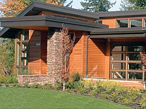

Green Building Helps Developer Thrive Despite Great Recession
By Claudia Girrbach
With homebuyers frozen out of the market in the winter '08, Jon Girod,
the co-founder and president of Quail Homes, took a hard look at his
business model. He made the bold decision to embrace green building
practices. This case study reviews why he decided to retrench, how he
shifted to green and the results.
The Turning Point
Girod had been a successful homebuilder for over 20 years in the Vancouver,
Wash. - Portland, Ore. region. "As the severity of the economic downturn
became apparent, Girod did not know what to do at first. He soon concluded
that the same entrepreneurial mindset that served him in the early days
of his business would help him survive and eventually thrive.
Prior to the downturn, Girod had been aware of green building practices
and Quail Homes incorporated some of the concepts. He found green principles
fit his values of quality and thrift; the idea of building smarter made
sense. But when his sales were strong, he had not had the time to make
the shift.
After he made the decision to "embrace green," he realized that the
market downturn provided him the opportunity needed to make the change.
He also saw that green would provide a valued differentiator from other
new homes and used homes that were flooding the market.
The crisis also made Girod consider his long-term legacy. In the course
of his career he would likely build over 3,000 homes. He wanted to do
his part to offer better performing homes that provided greater efficiency
and more comfortable living.
The Challenges of Converting a Construction Team
Although Girod was convinced that "green was not a fad and had staying
power," his crew and subcontractors were less enthusiastic. Some were
vocal naysayers. They worried that new practices would take longer and
cost more, which seemed like a poor prescription to the economic woes.
But Girod was not discouraged. "You are not a leader until you need
to move people to a different path," he said.
Rather than try to over-sell his point of view, Girod listened to his
team and did not discount their apprehensions. In fact, he paid for
the extra time required to learn new techniques. He considered this
his R&D investment.
In subsequent jobs, Girod expected that his team
and subcontractors were smart enough to figure out how to make the green
technique more efficient and paid the standard rates.
To facilitate
the shift, Girod and his team did a bit of experimentation to find the
best approaches. He worked closely with his employees and subcontractors
to help them optimize and cheer them on. "You can get real resourceful
when you don't have much money," he explained.
A big lesson was to fully
commit to the new method -- a "burn the bridge" mentality. In Girod's
experience, it is not until people are fully committed do they truly
open up to new ways and make them efficient. With a foot in both worlds,
new methods often languish because they are never given full attention,
or are purposefully sabotaged. Many a big company CEO could vouch for
that.
Over time, veteran construction workers became Girod's biggest
advocates -- selling green to new recruits. One framer started building
his own home using conventional methods at the start of Quail Homes'
conversion to green. Upon completion of the home, Girod described "that
the framer was kicking himself for not building green" given its advantages
and comparable cost.
Winning Over Customers
Once Quail Homes had built their new green homes, the next step was selling them. Girod found that his potential customers appreciated energy efficiency, greater performance, more comfortable living such as air quality, noise dampening and consistent temperatures.
Girod believes that the confusion among consumers is "in the details of how green is delivered." Given consumer interest in green values, many builders claim to be green.
Girod favors an industry standard to eliminate consumer confusion. Quail Homes uses Home Energy Rating System (HERS) to measure its homes' efficiency. HERS is a relative energy use index that estimates the energy use of the building. A HERS index of 100 represents the energy use of "American Standard Building" and zero represents that no net purchased energy is required.
Despite the optimization of building methods, there is still a small cost premium given materials such as more insulation or higher quality windows. These extra costs are easily offset by lower energy costs in the long run. Girod tackles this sales challenge in a pragmatic way. "You just need to focus the buyer to sell it," he said. "Green features are worth much more than a granite counter top which was once the must-have feature."
In addition to his one-on-one sales efforts, Girod does a good job on his website to educate consumers and dispel the myths surrounding green building practices.
Making Green a Core Value
Quail Homes has made the transition to green and its green inventory has solid turnover. Girod continues to look for ways to incorporate more efficiency measures. Homebuyers are realizing at least as much energy savings as estimated by HERS. "Once a construction team learns that green is not that hard and once homeowners experience living in a green home, they never go back," Girod said.
Claudia Girrbach is the author of numerous case studies on sustainability and a consultant to nonprofit organizations and leading companies. You may learn more on her blog, Green Grows Green.